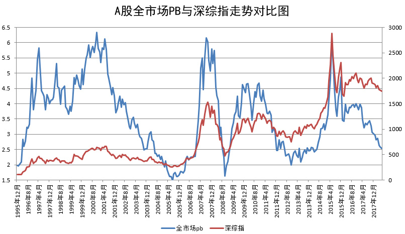

打脸了，没破。 
@ETF拯救世界:
今天数据没出来，但如果尾盘半个小时没有猫腻，那么今天A股全市场PB应该会降至2.5以下了。
这是一个标志性的事件。意味着进入真正意义上的“低估”区域。
绝不仅仅是对比历史，还包括横向对比各国市场。
感谢资本市场，感谢这时代。
show time.
当然，前路依然崎岖。主要阻力来自于非市场因素。不埋怨，不骂娘。坦然接受客观事实，想办法获取最大利益
这是一个标志性的事件。意味着进入真正意义上的“低估”区域。
绝不仅仅是对比历史，还包括横向对比各国市场。
感谢资本市场，感谢这时代。
show time.
当然，前路依然崎岖。主要阻力来自于非市场因素。不埋怨，不骂娘。坦然接受客观事实，想办法获取最大利益
- 